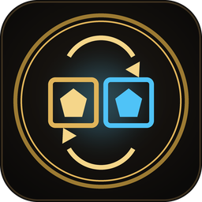

TrinketDock
Two buttons for your trinkets and a flyout to swap them. In combat the swap is queued and done the moment combat ends. Nothing runs in the background.
See it in action
A recreation in your browser, close to what you see in game.
How it plays
- Click a dock button to use the trinket, or bind a key.
- Hover it: the trinkets in your bags fly out.
- Out of combat a click swaps right away.
- In combat the click queues the swap, shown by a small icon on the button. It happens the moment combat ends.
- Nothing else runs: no bag scans when you loot, no work when combat starts or ends.
What it does
Settings
- ◆Its own settings window:
/tdockor the addon menu at the minimap. Drag it anywhere, changes apply live. - ◆Show the buttons, Lock position, Vertical, Tooltips, Scale, flyout upwards or downwards, Reset position.
- ◆Keybindings for both trinkets under Options > Keybindings > TrinketDock.
Changelog
- Two use buttons for the top and bottom trinket, with cooldowns. Keybindings for both.
- Flyout with the trinkets in your bags: left-click equips to the top slot, right-click to the bottom slot.
- In combat the flyout queues the swap: it happens as soon as combat ends, shown as a small icon on the button.
- No background work: bags are read only when the flyout opens.
- Side by side or stacked, flyout up or down, scale, lock, Shift-drag to move.
- Settings window of its own with a "Report a bug" button.
More from Bencepo
SpikeSpotter
ProcFlare
SwingCast
Feedback, bugs and ideas
Every addon is tested in game before it ships, but Forever changes often. Tell me what breaks and what you miss.
Report a bug
Open an issue on GitHub (the form asks for everything needed) or leave a comment on CurseForge: what you did, what happened, and the error text from BugSack if there is one.
Share your run
LevelTrail turns your export into a share image for Discord or Reddit, VendorFloor does the same for your flips. Names can be hidden.
Suggest a feature
Ideas that make leveling faster or the UI calmer have the best chance. Comments on CurseForge reach me directly.
Support the addons
All addons and pages are free and stay free, without ads or cookies. A privacy-friendly counter only tallies page views. If they save you time in game, a tip keeps new features and fixes coming.